4 Inference and Hypothesis Testing
Data and data sets are not objective; they are creations of human design. We give numbers their voice, draw inferences from them, and define their meaning through our interpretations.
Kate Crawford
Inferential statistics is the branch of statistics concerned with drawing conclusions about populations or causal relationships from sample data. It provides the tools to answer questions like: did our manipulation actually cause a change, or could the pattern we observed have arisen by random chance alone?
This chapter does that in two parts. The first part builds the logic by simulation, with no formulas: we work out what chance alone can produce, then compare a real result against it. The rest of the chapter replaces the simulation with the standard hypothesis testing machinery, because once you can assume a known reference distribution you no longer have to rebuild the chance window from scratch every time.
4.1 What chance alone can produce
An experiment asks whether a manipulation causes a change in what we measure. Some manipulations are so overwhelming that no statistics are required to see them. Flip a light switch up and the light comes on; flip it down and it goes off, every time. You don’t need a \(t\)-test to tell you that flipping the light switch is the cause of the change in brightness.
Nothing in environmental science behaves like this. Effects are real signals buried in noisy, variable measurements, where flipping the switch changes the outcome on average. Not in every instance, and not by the same amount every time.
Random chance can produce apparent differences between groups even when no real difference exists. We have already seen this with sampling: two samples from the same distribution come out differently. The same principle applies when we compare group means. This is a fundamental problem for inference.
Consider a scenario where we expect to find no real difference. A researcher surveys 10 caves for white-nose syndrome, a fungal disease that has killed millions of North American bats, capturing 20 bats at each cave and counting how many show visible signs of infection. Figure 4.1 lays out the design.
The key feature is that all 10 caves are drawn from the same population. There is no treatment, no environmental gradient, nothing systematic separating them, so the true infection rate is identical everywhere. Splitting them into two groups of 5 is arbitrary. Any difference we see between those groups therefore has to be sampling error, which makes this the cleanest possible look at what chance alone can manufacture.
Figure 4.2 shows one run of this scenario: the mean number of infected bats in each group.
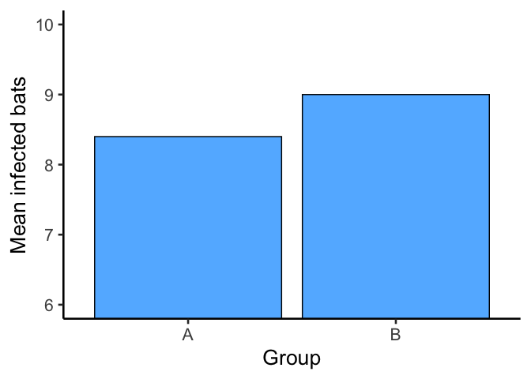
The bars are not the same height: Group A and Group B have different mean counts. But both groups were drawn from the very same population of sites, so this isn’t a real difference in infection risk, it’s sampling error.
This is the core inference problem: differences appear even when nothing real caused them. How can we tell whether an observed difference is real or just the result of chance?
Chapter 2 showed that chance alone can produce spurious correlations. The same is true for group means, and it can be pinned down: run the same arbitrary split many times and record what comes out. We summarize each run as a single difference score: the mean count for Group A minus the mean count for Group B. Figure 4.3 shows the difference scores for 10 replications of the survey, each one sampling all 10 caves from the same population, splitting them 5 and 5, and computing the means.
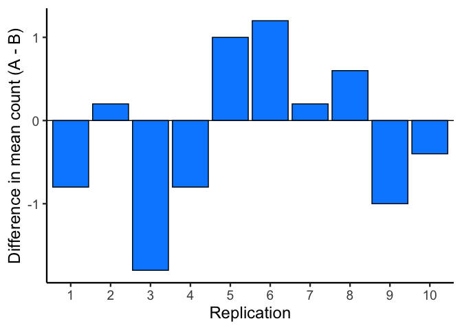
A bar at zero means the two groups had the same mean count in that replication. Positive values indicate Group A was higher; negative values indicate Group B was higher. Chance produces a different difference every time, but not an unlimited one. To see which sizes are common and which are rare, we run 10,000 replications and plot the difference scores as a histogram.
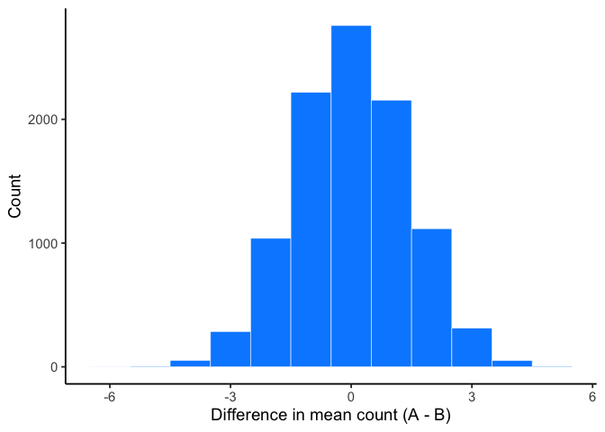
This histogram is the chance window for this study design. It shows that chance most often produces a difference near zero, the tallest bar in the center. Larger differences in either direction occur less and less frequently. We can see that differences larger than +/- 3-ish are possible, but very rare.
We can use this window to evaluate any observed difference. If a study found a difference of 1 infected bat between two groups, that falls well inside the chance window: differences of that size occur frequently by random sampling alone. If the study found a difference of 6 bats, that would fall far outside the window; chance produced a difference that large 0 times out of 10,000. When an observed result almost never happens by chance, we have grounds to conclude that something other than chance produced it.
4.2 Chance vs. not chance
The window tells us what chance can do. It does not tell us where to draw the line between “chance could have” and “chance didn’t.” That is a judgment, not a calculation.
Figure 4.5 draws lines on the same bat histogram from above. The boundaries are the smallest and largest differences chance actually produced across the 10,000 replications.
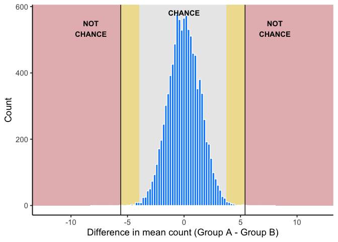
Across the 10,000 replications, chance produced differences from about -5.6 to 5.4 bats.
- Chance (grey). Chance produced differences like this routinely. No grounds for suspicion.
- Ambiguous (gold). The edges of what chance produced. Chance can land here, but rarely: probably not chance, but not ruled out.
- Not chance (red). Chance never produced a difference this large in 10,000 tries. Real grounds to suspect something beyond sampling error.
4.2.1 How rare is rare enough?
Question: How many times does something need to happen for it to happen “a lot”? How rare does something need to be before you stop worrying about it?
Environmental scientists already have a working vocabulary for this: the 100-year flood. A “100-year flood” doesn’t mean floods that size happen once a century on a schedule; it means that in any given year, there’s about a 1-in-100 chance of a flood that severe. Would you build a house in that floodplain?
Many people do, and often regret it, because a 1% annual chance still adds up over a 30-year mortgage (roughly a 26% chance of at least one such flood in that span). A location with a 1-in-10,000 annual flood risk is very different: over the same 30 years, the cumulative chance is under 0.3%.
That’s the intuition we need going forward: rare events still happen, but how rare something is changes what you’re willing to conclude from seeing it.
Where the gold zone ends is a judgment call. A stricter line means fewer false alarms and more missed real effects; a looser line means the reverse. Science standardizes that call with a convention, \(\alpha = .05\), defined later in this chapter. It is about 1 in 20, far looser than the red zone’s never in 10,000.
4.3 Hypothesis tests
4.3.1 The null and alternative hypotheses
The chance window described a world where nothing but chance is at work. A formal test gives that world a name. In the bat example, “nothing but chance” meant no real difference between groups. From here on we compare a single sample against a specific value, such as a regulatory limit or a historical average.
The null hypothesis, \(H_0\), is the claim that the population mean equals that specific value, written \(\mu_0\). If \(H_0\) is true, any gap between the sample mean and \(\mu_0\) is sampling error.
The alternative hypothesis, \(H_a\), is the claim that the population mean does not equal \(\mu_0\). It can also point in one direction only, larger or smaller; Section 4.5 covers when that is justified.
\[H_0:\ \mu = \mu_0 \qquad H_a:\ \mu \neq \mu_0\]
Null value notation. Hypotheses are always about the population mean \(\mu\), compared with the constant \(\mu_0\). The sample mean \(\bar{x}\) is never part of \(H_0\) or \(H_a\); it is the evidence we bring to test them.
4.3.2 From simulation to a formal test
Everything so far was built by brute force: thousands of replications, piled into a histogram, with a real result laid against the pile. Nobody wants to rebuild a chance window for every question. Chapter 3 already supplies a shortcut: sample means have a predictable distribution of their own,: centered on the population mean, with spread \(\sigma/\sqrt{n}\), and close to normal once the sample is large enough (the Central Limit Theorem). That lets us replace the simulated chance window with a curve whose shape we already know. The logic does not change, only the bookkeeping does.
NoteNote: Which curves have to be normal
Every test in this book except the nonparametric tests in Chapter 7 reads its answer off a normal curve, or its close relative, the \(t\) curve. Two different reasons put a normal curve there.
For the sampling distribution of the sample mean, it is the Central Limit Theorem at work: whatever the population looks like, sample means pile up in a roughly normal shape once the sample is large enough.
For a population, it is not required. A test reads its answer off the sampling distribution of the sample mean, not off the population. The population’s shape only matters when the sample is small, because the Central Limit Theorem needs a large enough sample to promise a normal shape for sample means. With a small sample, the normal curve for \(\bar{x}\) rests on the population itself being roughly normal, and the only check we have is the sample: a histogram with no strong skew and no extreme outliers.
When the sample says the normal assumption is not reasonable, the nonparametric tests in Chapter 7 take over.
4.3.3 The players
A test is about \(\mu\), the true population mean, which we never observe; everything we know about it comes from one sample. The null hypothesis proposes a value for it, \(\mu_0\). To reject \(H_0\), the sample has to be hard to explain if the null were true: its mean, \(\bar{x}\), has to land farther from \(\mu_0\) than sampling error would plausibly carry it.
Several distributions and values take part in that comparison. Table 4.1 lists every one, with the line each is drawn with in this chapter’s figures. They fall into three groups: what we would expect if \(H_0\) were true, what the sample gives us, and the truth we never see.
| Line | Player | What it is | |
|---|---|---|---|
| If H0 were true | \(\mu_0\) | The population mean if \(H_0\) were true | |
| Null population distribution | The population if \(H_0\) were true: centered at \(\mu_0\), as wide as the population | ||
| Sampling distribution of the sample mean under \(H_0\) | Where \(\bar{x}\) would land across many samples if \(H_0\) were true: centered at \(\mu_0\), spread = standard error | ||
| From the sample | \(\bar{x}\) | The sample mean: the one value we observe | |
| Estimated population distribution | Centered at \(\bar{x}\), with the sample's standard deviation as its spread: our best picture of the true population | ||
| Sampling distribution of the sample mean | Where \(\bar{x}\) would land across many samples: centered at \(\bar{x}\), spread = standard error | ||
| Confidence interval | \(\bar{x} \pm 1.96\) standard errors, built from the sampling distribution of the sample mean | ||
| The truth | True population distribution | The population the data actually came from. Never known. \(H_a\) is a claim about where it sits |
4.3.4 Seeing them together
The players are easier to hold onto as a picture than as a table. Let’s build that picture a curve or two at a time.
The population curves in these figures are drawn as normal for clarity, including the estimated population, drawn with the sample’s mean and standard deviation. A test does not need the population to be normal. It runs on the two sampling distributions of the sample mean (the dot-dash curves), and the Central Limit Theorem makes those close to normal whatever shape the population has, once the sample is large enough.
Notation reminder. Chapter 3’s shorthand for a normal curve: \(X \sim N(\mu, \sigma^2)\) reads “the random variable \(X\) is normally distributed with mean \(\mu\) and variance \(\sigma^2\).” A normal curve needs just those two numbers, a center and a spread. The second number is the variance, the square of the standard deviation.
1. The null population distribution.
Start with the null population distribution: the population we would have if \(H_0\) were true. Its center, \(\mu_0\), comes from \(H_0\) itself. Its spread is the population standard deviation, \(\sigma\). In practice \(\sigma\) is almost never known and the sample’s standard deviation stands in for it; this chapter treats \(\sigma\) as known as a simplification. The \(t\)-tests in Chapter 6 are the adjustment used in practice.
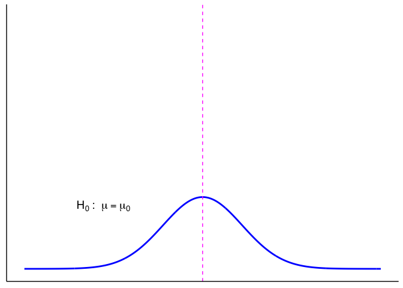
2. Null vs. true population.
In an idealized world where \(H_0\) is exactly true, the true population and the null population distribution are identical. In reality, we never know the true population.
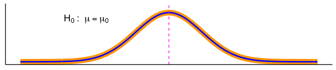
3. The sample’s picture of the truth. We never see the true population, but we do have a sample. From the sample’s mean, \(\bar{x}\), and its standard deviation we build the estimated population distribution: our best picture of the true population, drawn here as a normal curve. With a representative sample, the two line up closely.
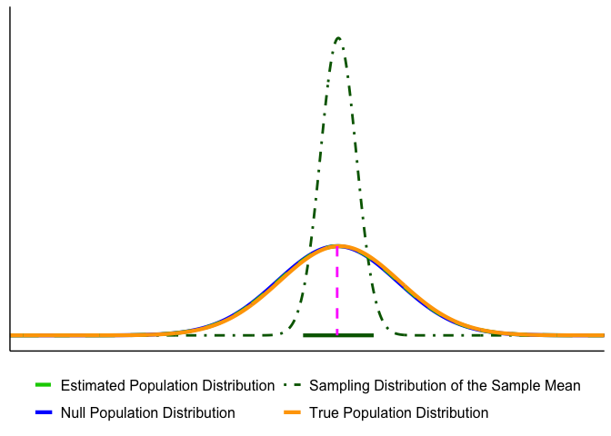
4. From individual readings to sample means. The sampling distribution of the sample mean is a normal curve, so it needs a center and a spread. Its center is \(\bar{x}\), the same as the estimated population. Its spread is the standard error: the sample’s standard deviation divided by \(\sqrt{n}\). (Not \(\sqrt{n-1}\): the \(n-1\) already went into computing the standard deviation itself, back in Chapter 3.) In the shorthand, it is \(N(\bar{x}, SE_{\bar{x}}^2)\): same center, much narrower. This special distribution is also where the confidence interval comes from, which we build later in this chapter. Figure 4.9 also shows why the population’s shape matters less than it might seem: make the population right-skewed and, once the sample is large enough, the sampling distribution of the sample mean keeps the same normal shape and the same spread.
![Animation. A wide light-green dashed bell curve centered on a dotted line labeled x-bar, labeled estimated population, center x-bar, spread s. A much narrower dark-green dot-dash curve appears at the same center, labeled sampling distribution of the sample mean, N of x-bar and SE squared. The wide curve then gradually becomes right-skewed, with a long right tail, while the narrow dot-dash curve stays exactly the same; the final label reads same sampling distribution of the sample mean, once n is large enough.](imgs/gifs/ch4_step4.gif)
5. The same move on the null side. The sampling distribution of the sample mean under \(H_0\) is centered at \(\mu_0\), and its spread is again the standard error, the null population’s standard deviation divided by \(\sqrt{n}\): \(N(\mu_0, SE_{\bar{x}}^2)\). It describes where \(\bar{x}\) would land across many samples if \(H_0\) were true, which makes it the formal version of the chance window. The critical values later in the chapter come from it.
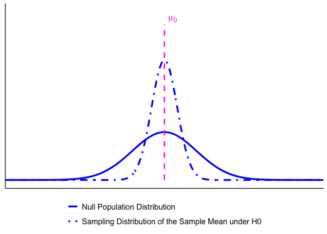
All of them at once. Put every player on one set of axes and the picture gets crowded fast, which is why the rest of the book shows only the pieces a given question needs. Figure 4.11 adds them one at a time, grouped as in Table 4.1, and ends with all of them together.
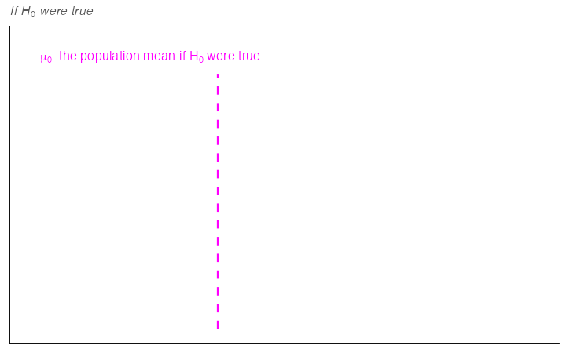
The two curves a decision uses. Strip the picture back to the two sampling distributions of the sample mean (Figure 4.12). Everything in the next section runs on these two: critical values and the \(p\)-value read off the one built from \(H_0\), and the confidence interval comes from the one built from the sample.
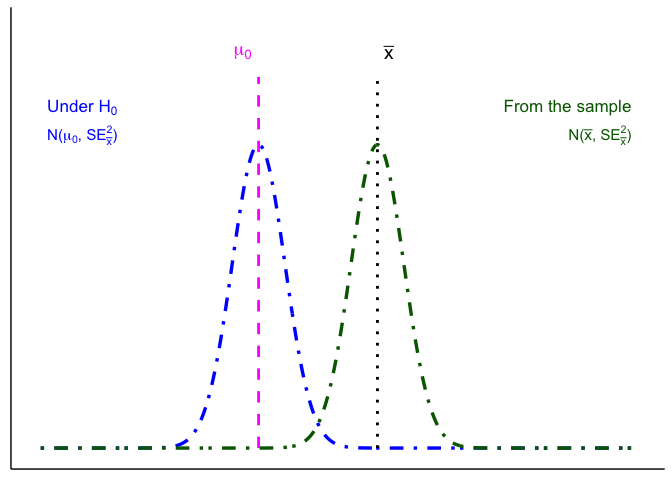
4.4 Making the decision
4.4.1 Terms for decision rules
When running a hypothesis test, four terms guide our decision. The first is the quantity every test computes.
Test statistic. A test statistic is a ratio. On top goes the effect you observed, the distance between what you measured and what \(H_0\) predicted. On the bottom goes an estimate of how much that distance could move around by chance alone:
\[\text{statistic}=\frac{\text{effect}}{\text{error}}\]
That is the whole idea, and every test in this book is a version of it. A difference of 2 units is not impressive or unimpressive on its own. It is impressive only relative to how much difference chance produces for a study of this size, which is exactly what the chance window measured earlier in this chapter. The test statistic is that comparison written as a single number: how many units of ordinary noise is this effect worth?
Large statistic means the effect is big compared to the noise. Small statistic means it is not. Everything after this is bookkeeping about where to draw the line.
Significance level (\(\alpha\)). Chosen before the test. \(\alpha\) is the long-run probability of a Type I error (rejecting a true \(H_0\); more on error types next chapter). A common choice is \(\alpha = 0.05\). Smaller \(\alpha\) makes tests more cautious and produces wider confidence intervals.
\(p\)-value. Assuming \(H_0\) is true, the \(p\)-value is the probability of seeing a test statistic at least as extreme as what we observed. Small \(p\) means our data look unusual under \(H_0\).
Confidence level. Confidence level is the long-run proportion of confidence intervals that contain the true parameter when we repeat the entire data collection and interval procedure.
\[\text{Confidence Level} = 1 - \alpha\]
With \(\alpha=0.05\), about 95% of intervals constructed this way will capture the true value.
CautionWarning: Don’t misread a confidence interval
Do not say:
“There is a 95% probability this interval contains \(\mu\).”
Instead say:
“We used a procedure that captures \(\mu\) about 95% of the time in the long run.”
4.4.2 Three equivalent ways to test \(H_0\)
All three routes below run on the same quantity: the test statistic defined above.
Test statistic / critical values. Choose \(\alpha\), find the corresponding critical value(s) for your test statistic, and compute your observed statistic. Reject \(H_0\) if the statistic falls in the rejection region.
Confidence interval (two-sided). Build a \((1-\alpha)\) CI for the parameter. Reject \(H_0\) if \(\mu_0\) lies outside the CI; fail to reject if it lies inside.
\(p\)-value (probability). Compute the \(p\)-value for your observed statistic under \(H_0\) and compare to \(\alpha\). Reject \(H_0\) if \(p<\alpha\).
Note. Methods 1–2 yield a yes/no at \(\alpha\); method 3 yields a yes/no plus a graded measure of evidence (exact \(p\)).
4.4.3 Route 1: test statistic and critical values
Critical values come from the sampling distribution of the sample mean under \(H_0\) (Figure 4.10): centered at \(\mu_0\), with spread equal to the standard error, \(\sigma/\sqrt{n}\). It is the formal version of the chance window: instead of simulating the differences chance can produce, we assume a distribution and read them off it.
Figure 4.13 draws it for a two-sided test at \(\alpha = 0.05\), marked off in standard errors from \(\mu_0\). The red lines are the critical values, 1.96 standard errors on either side of \(\mu_0\). They cut off the most extreme 5% of the curve, 2.5% in each tail, and those shaded tails are the rejection regions. Here the observed \(\bar{x}\) lands 2.4 standard errors above \(\mu_0\), inside the right-hand rejection region. Counting that distance in standard errors is exactly the test statistic from earlier, \(z = (\bar{x} - \mu_0)/SE = 2.4\).
Here’s the decision rule:
- If the observed test statistic falls inside the central region, we fail to reject \(H_0\) because the result is consistent with chance variation.
- If it falls in either rejection region, we reject \(H_0\) because the result is too extreme to attribute to chance alone at the 5% level.
This picture makes clear why \(\alpha\) and the \(p\)-value are linked. \(\alpha\) sets the cutoff for how extreme is “too extreme,” while the \(p\)-value tells us how far into the tails our actual result lies.

4.4.4 Route 2: confidence interval
The confidence-interval route makes the same decision from the sample’s side. It never uses the null population distribution, only the single value \(\mu_0\).
Start from the sampling distribution of the sample mean built in Figure 4.9: centered at \(\bar{x}\), with the standard error as its spread. A sample mean lands within 1.96 standard errors of the true mean \(\mu\) about 95% of the time, so the middle 95% of this curve, \(\bar{x} \pm 1.96\,SE\), is the 95% confidence interval: the values of \(\mu\) that are consistent with our sample (Figure 4.14). Then ask where \(\mu_0\) falls (Figure 4.15).
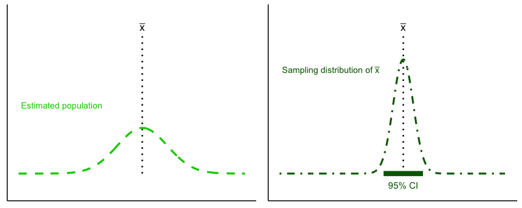
Decision rule:
- If \(\mu_0\) lies inside the CI bar, we fail to reject \(H_0\).
- If \(\mu_0\) lies outside the CI bar, we reject \(H_0\) at \(\alpha=0.05\).
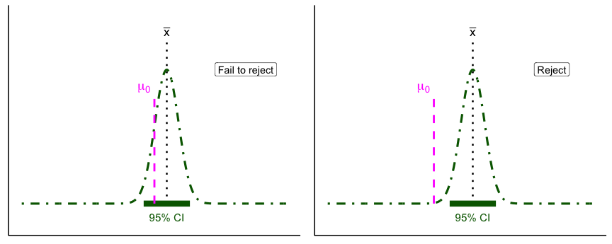
The right panel is worth a second look. A single reading at that \(\mu_0\) would be unremarkable: it sits well inside the wide estimated population of Figure 4.9. It is simply not a plausible value for the mean, because sample means vary much less than individual readings do.
For common models, a two-sided level-\(\alpha\) test of \(H_0:\ \mu=\mu_0\) is equivalent to checking whether \(\mu_0\) lies inside the \(100(1-\alpha)\%\) confidence interval. The CI is often the most intuitive way to see this: it shows both the decision (reject or not) and the range of parameter values still consistent with the data.
4.4.5 Route 3: \(p\)-value
The \(p\)-value is the probability, under \(H_0\), of obtaining a test statistic at least as extreme as the one you observed. In practice, you compute it from your observed statistic using software or a table. Reject if \(p<\alpha\).

4.4.6 Reject or fail to reject
Test outcomes are binary: we either reject \(H_0\) or fail to reject \(H_0\). We never accept \(H_0\), because sampling variability means we can’t prove it’s true, only that the data are consistent with it. Similarly, we don’t formally accept \(H_a\), but we can say the results provide support for \(H_a\) when \(H_0\) is rejected.
If the observed statistic falls in either tail beyond the critical value(s), reject \(H_0\). Otherwise, fail to reject \(H_0\). Report the exact \(p\) and an effect size or CI.
Here are our options (for a two tailed test).
- Reject the Null Hypothesis (Two-Tailed Test). The sample mean falls beyond the critical values, in the rejection region. The confidence interval also excludes the null mean. In this example, \(\bar{x}\) is 3.75 standard errors from \(\mu_0\), well past the critical values of \(\pm 1.96\).
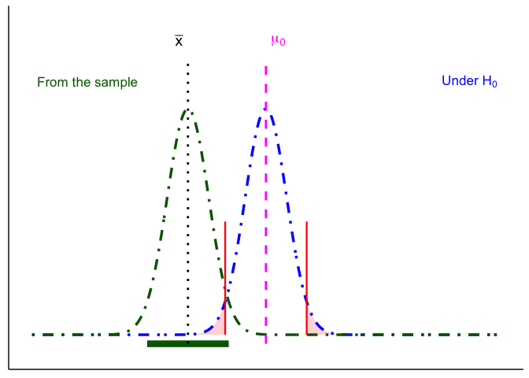
- Fail to Reject the Null Hypothesis (Two-Tailed Test). The sample mean falls in the non-rejection region, and the confidence interval includes the null mean. In this case, the evidence is consistent with chance variation, so we fail to reject \(H_0\).
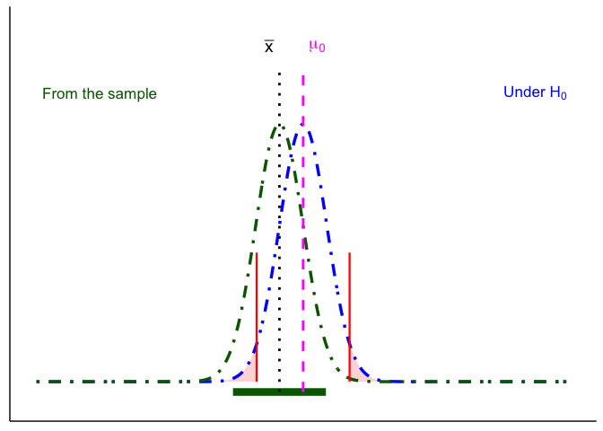
CautionWarning: Beyond ruling out chance
Every hypothesis test in this book asks one question: could chance alone have produced this result? It is not the only question available.
Other methods start from two or more candidate explanations, say a steady linear decline versus a sharp threshold response, and ask which one the data support better.
Ruling out chance tells you that something is going on, but not always what. It is worth knowing the difference, because “significant” only ever answers the first question.
4.5 One- and Two-Tailed Tests
\(H_a\) is a claim about where the true population could sit. A two-tailed alternative says it might sit below \(\mu_0\) or above it. A one-tailed alternative says it can only sit on one side (Figure 4.19).
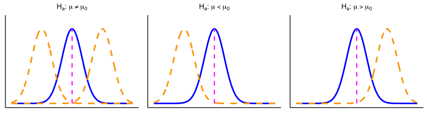
The test handles those claims through where \(\alpha\) goes. A two-tailed test splits \(\alpha\) between both tails of the sampling distribution of the sample mean under \(H_0\). A one-tailed test puts all of \(\alpha\) in the one tail \(H_a\) points toward (Figure 4.20).
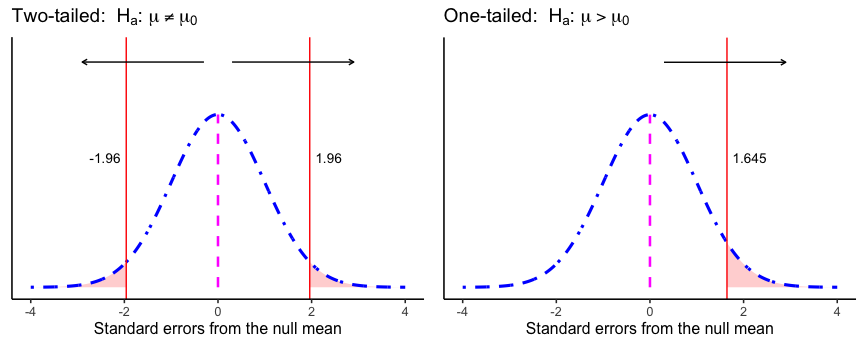
4.5.1 One- vs. Two-Sided: which and why?
Use this rule of thumb:
- Two-sided (default): You care whether \(\mu\) differs from \(\mu_0\) in either direction.
- One-sided (only if justified): Differences in the opposite direction are scientifically irrelevant and would not change your decision or action.
Default to two-sided unless your theory genuinely rules out the other direction. There is a second reason beyond caution. A one-tailed critical value always sits closer to zero than a two-tailed one, so a one-tailed test rejects on weaker evidence. Run them habitually and you reject more often than your stated \(\alpha\) implies, which is a cost the next chapter makes precise.
The practical upshot: commit to one or two tails before you see the data. Choosing afterward, because one of them gives the smaller \(p\)-value, is the version of this that gets people in trouble.
4.6 Chapter Summary
Why it matters. This chapter is the bridge between describing data and drawing conclusions from it. Everything after this point is a variation on one move: work out what chance alone could produce, then ask whether your result is rare enough under chance, by a standard set in advance (\(\alpha\)), to rule chance out.
Core ideas
- Chance produces differences on its own. Split one population into two arbitrary groups and their means will differ anyway, from sampling error alone. The question is never “is there a difference,” it is “is this difference bigger than chance can account for.”
- The chance window is buildable. Repeat a study thousands of times under conditions where you know nothing real is going on, collect the differences, and you have a picture of exactly what chance is capable of for a design your size.
- Rarity is a judgment, and it needs a convention. The 100-year flood shows the reasoning already exists outside statistics: a 1% annual chance is not zero, but it changes what you build. \(\alpha = .05\) is that same judgment, standardized so researchers aren’t each drawing their own line.
- A hypothesis test is the practical shortcut. Once you can assume a known reference distribution, the simulated chance window becomes a curve, and the decision becomes a calculation. The logic is the same.
- Two pairs of curves. From the sample: the estimated population distribution and the sampling distribution of the sample mean, which gives the confidence interval. Under \(H_0\): the null population distribution and the sampling distribution of the sample mean under \(H_0\), which gives the critical values and \(p\)-value. The true population distribution is never known.
- Three routes, one decision. A test statistic against a critical value, a confidence interval, and a \(p\)-value are three ways of asking the same question. For a two-tailed test at the same \(\alpha\) they always agree; a one-tailed test checked against a two-sided confidence interval can disagree near the boundary.
- Commit to one- or two-tailed in advance. A one-tailed test is only justified when theory rules out the other direction. Choosing after seeing the data raises your real error rate above the \(\alpha\) you claimed.